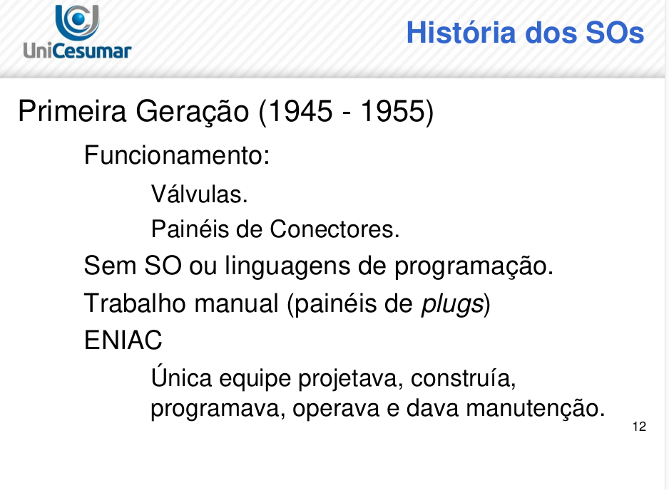

Objetivos de Aprendizagem
- Apresentar conceitos e tipos de sistemas operacionais.
- Apresentar os sistemas operacionais de maior uso e influência.
História do Sistema operacional
Como o Sistema Operacinal evoluiu ao longo do tempo?
Mas, afinal, quando começamos a utilizar sistemas operacionais nos computadores modernos?
Você deve se lembrar das cinco gerações de computadores já estudadas:
Na primeira geração (1945-1955) praticamente não tivemos sistemas operacionais, já que boa parte do trabalho realizado era manual, utilizando válvulas e necessitando de muitas pessoas para operá-lo. Podemos citar o ENIAC como exemplo de computador desta geração.
Na segunda geração (1955-1965), devido ao uso de transistores, os computadores tornaram-se mais confiáveis se comparados com as válvulas que geravam muito calor e queimavam facilmente. Nesta geração surgiram os computadores de grande porte, também chamados de mainframes. Muitos deles utilizavam à técnica de cartão perfurado para a inserção de instruções e foram criados pela empresa IBM.
Os principais modelos de mainframes utilizados eram o 7094 e o 1401, ambos da IBM, e os sistemas operacionais mais utilizados eram o FMS (Fortran Monitor System) e o IBSYS, ambos desenvolvidos pela IBM para rodar no 7094. Estes sistemas operacionais são conhecidos como sistemas operacionais em lote (batch) e trabalhavam da seguinte maneira:
- Havia uma entrada de dados, geralmente em cartões perfurados. Cada nova entrada era chamada de job.
- O job era processado, utilizando o máximo do processador e sem executar outra tarefa de leitura ou escrita.
- Após o processamento, os dados resultantes eram escritos em cartões perfurados ou impressos em tela ou em papel.
Com o uso frequente destas máquinas foi percebido que enquanto os dados eram escritos, o processador ficava ocioso. Esta situação foi resolvida, com o uso da técnica de multiprogramação na terceira geração de computadores (1965-1980), ou seja, enquanto uma ação de entrada/saída era realizada, o processador poderia ser usado por outro job e quem deveria gerenciar este uso seria o sistema operacional.
Além desta técnica, outro diferencial nos sistemas operacionais para computadores da terceira geração foi o uso da técnica SPOOL (Simultaneous Peripheral Operation On Line) e TIMESHARING.
O spool consiste em permitir que o processamento de um job fosse iniciado automaticamente quando outro job fosse finalizado. Cabe ao sistema operacional gerenciar o início da execução destes jobs.
O timesharing permitia que cada usuário pudesse se conectar por meio de um terminal on-line. Caso um usuário conectado não tivesse utilizando recursos do hardware, o mesmo era alocado para os usuários que estavam utilizando estes recursos, com isto permitia melhor tempo de resposta para processamento.
Podemos citar como exemplos de sistemas operacionais desta geração:
- IBM OS/360, que era utilizado nos computadores modelo IBM 360.
- UNIX, tornou-se muito popular no mundo acadêmico, em agências governamentais e em empresas.
Figura: Painel de controle do IBM 360
Fonte: http://www.columbia.edu/cu/computinghistory/36091.html
A quarta geração (1980-atual) tornou os computadores cada vez menores e populares. Dentre os microcomputadores podemos citar os projetos IBM PC e Apple Lisa. O primeiro utilizou o sistema operacional MS-DOS (Disk Operating System - distribuído pela Microsoft), o qual utilizava somente a shell e teve grande sucesso no mercado. O computador Apple Lisa foi um fracasso, mas o fundador da Apple (Steve Jobs), não ficou abatido e na sua segunda tentativa, lançou o Apple Macintosh, este por sinal foi um sucesso comercial devido ao uso efetivo de uma interface gráfica (GUI), destinada a usuários que não sabiam nada sobre computadores.
A partir deste momento, estava declarada a guerra entre Apple (Steve Jobs) e Microsoft (Bill Gates).
Com os microcomputadores foi possível ter um computador em casa e devido a nanotecnologia, cada vez mais os computadores estão ficando menores. Dentre estes computadores podemos citar os notebooks, ultrabooks, tablets e smartphones.
Nas categorias smartphones e tablets, temos a existência de outros sistemas operacionais em especial o IO’s e o Android. Estes sistemas operacionais serão abordados com maiores detalhes logo a seguir.
Nas categorias de computador pessoal (desktop), ultrabook e notebook, podemos citar o Apple OS X, Microsoft Windows e o Linux. Estes também serão detalhados logo a seguir.